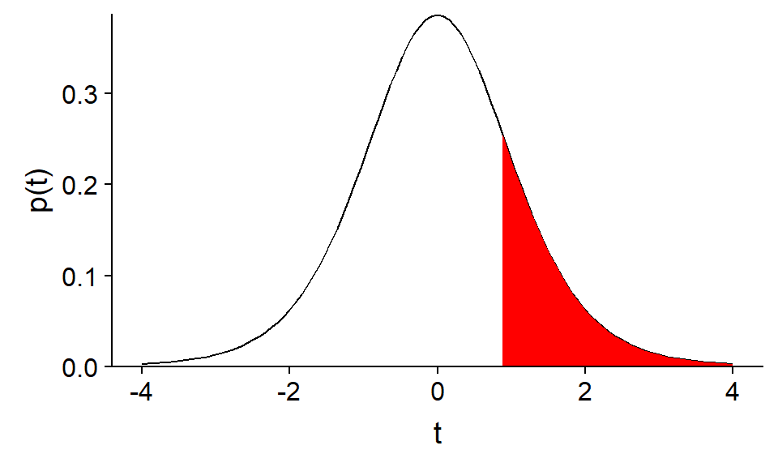
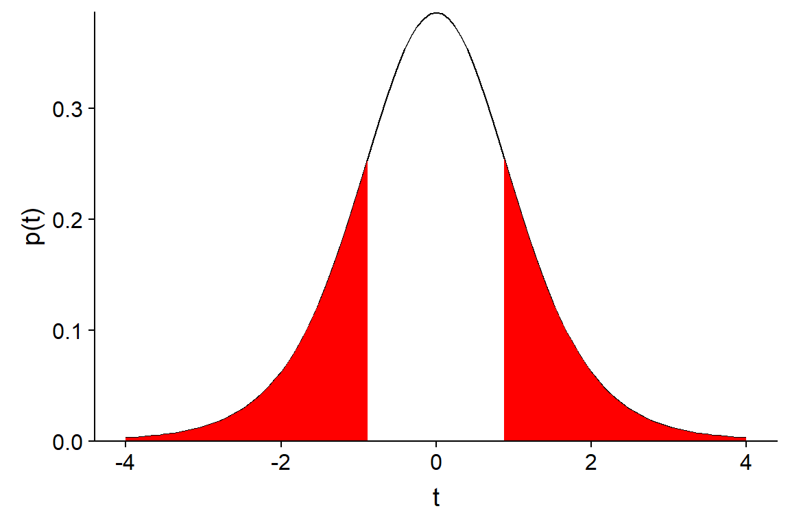
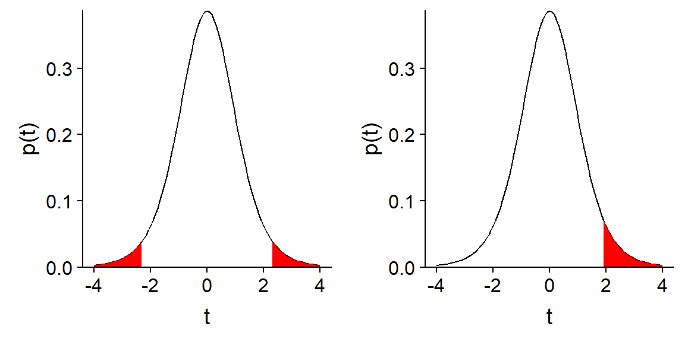
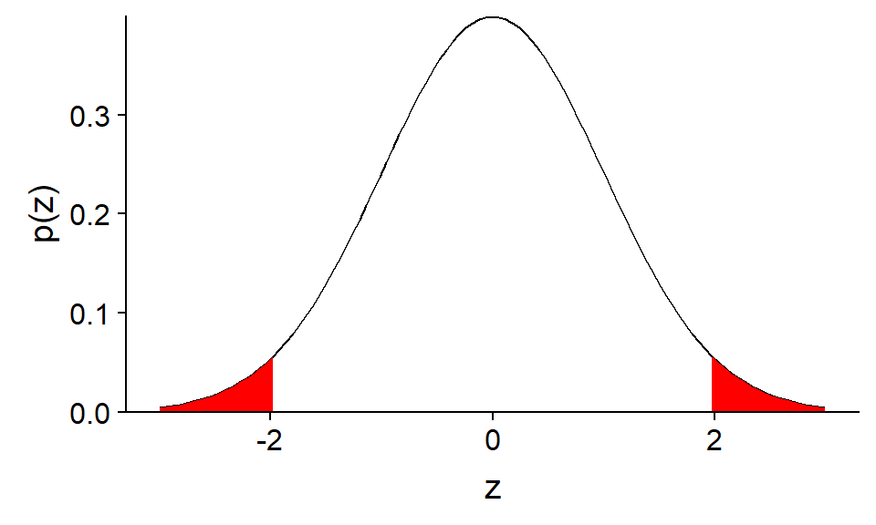
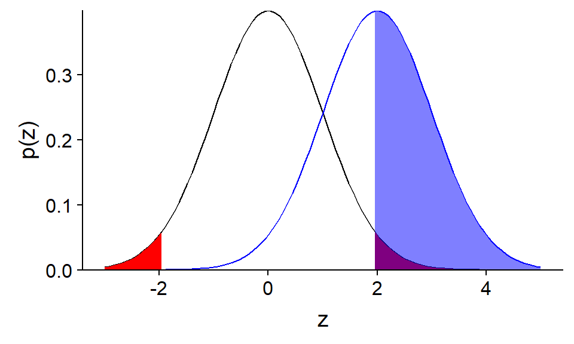
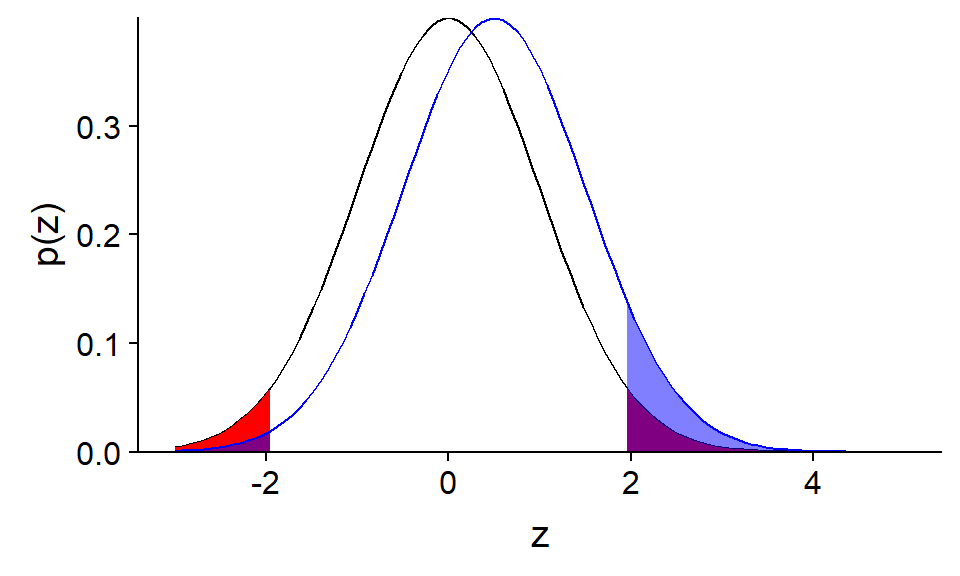
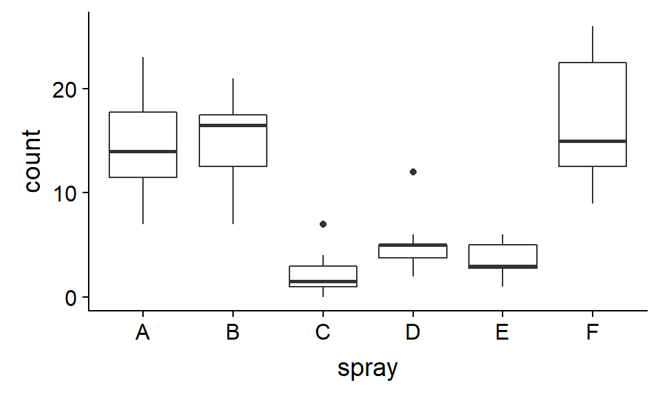
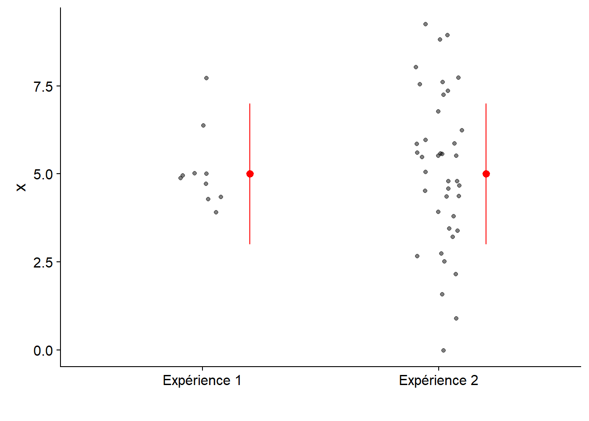

Tests d’hypothèse, partie 1
17 septembre 2018
Objectifs
Décrire le fonctionnement général d’un test d’hypothèse statistique.
Définir des concepts liés à la précision d’un test: seuil de signification, puissance, erreurs de type I et II.
Utiliser le test \(t\) pour comparer la moyenne de deux échantillons indépendants ou appariés.
Comparer la moyenne d’un échantillon à une valeur de référence
Nous voulons vérifier l’absence de biais d’un humidimètre, en mesurant l’humidité relative du sol à 9 endroits dans une placette de 1 m\(^2\). Nous savons que la vraie moyenne est 50%.
humidite <- c(47, 50, 48, 50, 54, 49, 56, 52, 51)
humid_moy <- mean(humidite)
humid_et <- sd(humidite) / sqrt(length(humidite))
paste("Moyenne de", round(humid_moy, 2), "et erreur-type de", round(humid_et, 2))## [1] "Moyenne de 50.78 et erreur-type de 0.95"Comparer la moyenne d’un échantillon à une valeur de référence
Supposons que ces mesures suivent une distribution normale.
Si l’appareil n’était pas biaisé (\(\mu\) = 50), quelle serait la probabilité que la moyenne de l’échantillon \(\bar{x}\) soit aussi éloignée de \(\mu\)?
Comparer la moyenne d’un échantillon à une valeur de référence
Si \(\mu\) = 50, l’écart entre \(\bar{x}\) et \(\mu\), divisé par l’erreur-type, suit une distribution \(t\) avec \(n - 1\) degrés de liberté:
\[ t_{n-1} = \frac{\bar{x} - \mu}{s / \sqrt{n}} \]
humid_t <- (humid_moy - 50) / humid_et
humid_t## [1] 0.8151115Comparer la moyenne d’un échantillon à une valeur de référence
Probabilité d’une valeur \(t\) plus élevée que celle de notre échantillon, si \(\mu\) = 50:
1 - pt(humid_t, df = 8)## [1] 0.2192996
Comparer la moyenne d’un échantillon à une valeur de référence
Probabilité d’obtenir un plus grand écart, positif ou négatif (valeur p): 0.438.

Tests d’hypothèse statistique
Tests d’hypothèse statistique
Un test d’hypothèse statistique vise à déterminer si une variation observée dans un échantillon de données est compatible avec un modèle “par défaut” (l’hypothèse nulle), ou si les observations sont si improbables selon cette hypothèse nulle qu’elle doit être rejetée au profit d’une hypothèse alternative.
Hypothèse nulle et hypothèse alternative
L’hypothèse nulle correspond souvent à une absence d’effet: aucune différence entre deux traitements, absence de corrélation entre deux variables, etc.
Dans notre exemple précédent, l’hypothèse nulle (\(H_0\)) est \(\mu = 50\). L’hypothèse alternative (\(H_a\)) est sa négation: \(\mu \neq 50\).
Exercice
Quelle est l’hypothèse nulle correspondant à chacune des hypothèses alternatives suivantes?
La densité des semis de sapins varie selon la pente dans une parcelle.
Ce nouvel insecticide est plus efficace que le traitement existant contre l’agrile du frêne.
Test unilatéral ou bilatéral
Le deuxième exemple de l’exercice est un test unilatéral.
Si \(\mu_T\) est l’effet du nouveau traitement et \(\mu_R\) celui du traitement de référence, \(H_0\) est \(\mu_T \leq \mu_R\) et \(H_a\) est \(\mu_T > \mu_R\).
L’exemple de l’humidimètre est test bilatéral. \(H_a\): \(\mu \neq 50\) est équivalente à l’union de deux hypothèse unilatérales (\(\mu < 50\) ou \(\mu > 50\)).
Le choix d’un test unilatéral ou bilatéral doit être fait à l’avance et dépend de la question qui nous intéresse.
Exercice
Quel serait un exemple d’hypothèse nulle et d’hypothèse alternative dans votre domaine de recherche?
Hypothèse scientifique et hypothèse statistique
Souvent, l’hypothèse alternative correspond à l’hypothèse du projet scientifique. Par exemple, on fait l’hypothèse que le traitement a un effet, donc on vérifie si cet effet peut être détecté (si l’hypothèse nulle peut être rejetée).
L’hypothèse nulle peut aussi être basée sur les prédictions d’un modèle du système étudié. Dans ce cas, son rejet signifie que les observations sont incompatibles avec le modèle.
Éléments d’un test d’hypothèse
- Une fois l’hypothèse choisie, la construction d’un test statistique requiert:
- une statistique qui mesure l’écart des observations par rapport à l’hypothèse nulle;
- la distribution de cette statistique sous l’hypothèse nulle; et
- un seuil de signification.
La valeur \(p\) est la probabilité d’obtenir un écart égal ou supérieur à celui observé, si l’hypothèse nulle était vraie.
Le seuil de signification (\(\alpha\)) est la probabilité qu’on considère assez petite pour rejeter l’hypothèse nulle si \(p \leq \alpha\).
Pour des raisons historiques, le plus souvent \(\alpha\) = 0.05. \(\alpha\) doit être choisi avant l’analyse des données.
Test unilatéral ou bilatéral
- Pour un test bilatéral, on rejette une fraction \(\alpha / 2\) de chaque extrême de la distribution.
- Pour un test unilatéral, on rejette une fraction \(\alpha\) d’une extrême de la distribution.

Types d’erreur et puissance d’un test
Erreurs de type I et II
Quatre scénarios possibles selon que \(H_0\) soit vraie ou fausse et qu’elle soit rejetée ou non:
| On ne rejette pas \(H_0\) | On rejette \(H_0\) | |
|---|---|---|
| \(H_0\) vraie | décision correcte | erreur de type I |
| \(H_0\) fausse | erreur de type II | décision correcte |
\(\alpha\) est à la probabilité d’erreur de type I si \(H_0\) est vraie.
\(\beta\) est la probabilité d’erreur de type II si \(H_a\) est vraie. La puissance du test correspond à (\(1 - \beta\)).
Question
Dans notre exemple du début du cours, pourrions-nous calculer la puissance du test, soit la probabilité de détecter un biais de l’appareil avec l’échantillon de 9 mesures? De quelle information supplémentaire avons-nous besoin?
Puissance d’un test
Le seuil de signification (\(\alpha\)) est fixé par l’analyste, mais la puissance d’un test dépend (entre autres) de la valeur réelle de l’effet.
Dans notre exemple, pour un \(\alpha\) et un plan d’expérience fixes, il est plus facile de détecter un grand biais qu’un plus petit biais.
Pour calculer la puissance d’un test \(t\): package pwr dans R.
Puissance d’un test
- Supposons que la statistique du test suit une distribution normale centrée réduite \(z\) (bonne approximation pour \(n\) élevé).
- Supposons que le biais réel est 2 fois l’erreur-type.
- Avec \(\alpha = 0.05\) l’hypothèse nulle est rejetée si \(F(z) < 0.025\) ou \(F(z) > 0.975\) (prob. cumul.).

Puissance d’un test
- Moyenne de l’échantillon suit une distribution normale centrée sur \(z = 2\) (biais réel).

Puissance d’un test

- Puissance du test: Probabilité que la moyenne obtenue soit plus grande que la valeur critique de \(z\) correspondant à \(F(z) = 0.975\)
1 - pnorm(qnorm(0.975), mean = 2)## [1] 0.5159678Question
Pour le même \(\alpha\), la puissance d’un test unilatéral (hypothèse alternative: \(\mu > 50\)) est-elle plus petite, égale ou plus grande à celle d’un test bilatéral?
Pour le test illustré, si on obtient un résultat significatif (rejet de l’hypothèse nulle), est-ce que le biais mesuré est un bon estimé du biais réel de l’appareil? Pourquoi?
Puissance d’un test
Si le biais réel est à \(z = 0.5\) (1/2 erreur-type).
- Erreur de type M (magnitude) ou S (signe).

Augmenter la puissance d’un test
Augmenter \(\alpha\): la puissance augmente, mais aussi le nombre d’erreurs de type I (et de type S).
Seule façon de réduire tous ces types d’erreurs: augmenter la taille de l’échantillon \(n\).
\(n\) doit être choisi en fonction de la magnitude de l’effet qu’on souhaite mesurer et de la variabilité des données.
Il ne faut pas calculer la puissance après coup à partir de l’effet mesuré.
Applications du test t
Comparer la moyenne d’un échantillon à une valeur de référence
Exemple: Comparaison d’un échantillon de 9 valeurs d’humidité à une moyenne de référence de 50.
humidite <- c(47, 50, 48, 50, 54, 49, 56, 52, 51)
t.test(humidite, mu = 50)##
## One Sample t-test
##
## data: humidite
## t = 0.81511, df = 8, p-value = 0.4386
## alternative hypothesis: true mean is not equal to 50
## 95 percent confidence interval:
## 48.57739 52.97816
## sample estimates:
## mean of x
## 50.77778Question
##
## One Sample t-test
##
## data: humidite
## t = 0.81511, df = 8, p-value = 0.4386
## alternative hypothesis: true mean is not equal to 50
## 95 percent confidence interval:
## 48.57739 52.97816
## sample estimates:
## mean of x
## 50.77778Que signifie chacun des éléments de ce résultat de la fonction
t.test?Quel est la relation entre un intervalle de confiance et un test d’hypothèse? Qu’est-ce que l’intervalle de confiance à 95% de \(\bar{x}\) nous dit sur le résultat du test de l’hypothèse nulle \(\mu = 50\) avec un seuil \(\alpha = 0.05\)?
Comparer les moyennes de deux échantillons indépendants
- Jeu de données
InsectSpraysinclus avec R: nombre d’insectes (count) sur des placettes traitées avec différents insecticides (spray), 12 mesures indépendantes par produit.
Comparer les moyennes de deux échantillons indépendants
ggplot(InsectSprays, aes(x = spray, y = count)) +
geom_boxplot()
- Testons l’hypothèse nulle selon laquelle produits A et B ont la même efficacité: \(\mu_A - \mu_B = 0\).
Distribution de la différence entre deux moyennes
Pour deux échantillons indépendants suivant chacun une distribution normale, la différence des moyennes \(\bar{x}_A - \bar{x}_B\) divisée par son erreur-type suit aussi une distribution \(t\):
\[t = \frac{\bar{x}_A - \bar{x}_B}{\sigma_{\bar{x}_A - \bar{x}_B}}\]
Distribution de la différence entre deux moyennes
La variance d’une différence entre deux variables aléatoires indépendantes est égale à la somme des variances des variables prises séparément.
\[\sigma_{\bar{x}_A - \bar{x}_B}^2 = \sigma_{\bar{x}_A}^2 + \sigma_{\bar{x}_B}^2\]
\[\sigma_{\bar{x}_A - \bar{x}_B} = \sqrt{\frac{s_A^2}{n_A} + \frac{s_B^2}{n_B}}\]
Distribution de la différence entre deux moyennes
Nombre de degrés de liberté donné par l’approximation de Welch:
\[df = \frac{\left(s_A^2 / n_A + s_B^2 / n_B \right)^2}{\frac{\left( s_A^2 / n_A \right) ^2}{n_A - 1} + \frac{\left( s_B^2/n_B \right)^2}{n_B - 1}}\]
Comparer les moyennes de deux échantillons indépendants
library(dplyr)
insectesAB <- filter(InsectSprays, spray %in% c("A", "B"))
t.test(count ~ spray, data = insectesAB)##
## Welch Two Sample t-test
##
## data: count by spray
## t = -0.45352, df = 21.784, p-value = 0.6547
## alternative hypothesis: true difference in means is not equal to 0
## 95 percent confidence interval:
## -4.646182 2.979515
## sample estimates:
## mean in group A mean in group B
## 14.50000 15.33333Comparer les moyennes de deux échantillons indépendants
Si on sait que la variance de chaque groupe est égale, on peut spécifier var.equal = TRUE.
t.test(count ~ spray, data = insectesAB, var.equal = TRUE)##
## Two Sample t-test
##
## data: count by spray
## t = -0.45352, df = 22, p-value = 0.6546
## alternative hypothesis: true difference in means is not equal to 0
## 95 percent confidence interval:
## -4.643994 2.977327
## sample estimates:
## mean in group A mean in group B
## 14.50000 15.33333- Par défaut,
var.equal = FALSE. Dans le doute, mieux vaut supposer que les variables sont différentes.
Question
Si on s’intéresse seulement au cas où l’insecticide B est plus efficace que A, quelle est l’hypothèse nulle et l’hypothèse alternative sur la valeur de \(\bar{x}_A - \bar{x}_B\)?
Test t unilatéral
Dans le cas où notre hypothèse alternative est \(\bar{x}_A - \bar{x}_B > 0\), on spécifie alternative = "greater".
t.test(count ~ spray, data = insectesAB, alternative = "greater")##
## Welch Two Sample t-test
##
## data: count by spray
## t = -0.45352, df = 21.784, p-value = 0.6727
## alternative hypothesis: true difference in means is greater than 0
## 95 percent confidence interval:
## -3.989891 Inf
## sample estimates:
## mean in group A mean in group B
## 14.50000 15.33333Comparaison de la moyenne de deux groupes appariés
Exemple: Comparer les mesures d’humidité du sol prises par deux appareils aux mêmes 9 points sur une placette. \(H_0\): même moyenne des mesures pour les deux appareils.
## point mesureA mesureB
## 1 1 50.0 49.6
## 2 2 51.1 52.2
## 3 3 48.0 48.3
## 4 4 50.0 50.2
## 5 5 51.1 52.0
## 6 6 55.7 56.1
## 7 7 54.3 54.5
## 8 8 46.0 46.8
## 9 9 50.7 51.7Comparaison de la moyenne de deux groupes appariés
Il s’agit de mesures appariées (une paire de mesures par point), donc nous spécifions paired = TRUE.
t.test(humi$mesureA, humi$mesureB, paired = TRUE)##
## Paired t-test
##
## data: humi$mesureA and humi$mesureB
## t = -3.0779, df = 8, p-value = 0.01516
## alternative hypothesis: true difference in means is not equal to 0
## 95 percent confidence interval:
## -0.8746025 -0.1253975
## sample estimates:
## mean of the differences
## -0.5Comparaison de la moyenne de deux groupes appariés
Ce test est équivalent à un test \(t\) pour un échantillon (comparaison du vecteur des différences à une valeur de référence 0).
humi <- mutate(humi, diff = mesureA - mesureB)
t.test(humi$diff)##
## One Sample t-test
##
## data: humi$diff
## t = -3.0779, df = 8, p-value = 0.01516
## alternative hypothesis: true mean is not equal to 0
## 95 percent confidence interval:
## -0.8746025 -0.1253975
## sample estimates:
## mean of x
## -0.5Exercice
Comparez le test avec données appariées (haut) au résultat supposant des échantillons indépendants (bas).
##
## Paired t-test
##
## data: humi$mesureA and humi$mesureB
## t = -3.0779, df = 8, p-value = 0.01516
## alternative hypothesis: true difference in means is not equal to 0
## 95 percent confidence interval:
## -0.8746025 -0.1253975
## sample estimates:
## mean of the differences
## -0.5##
## Welch Two Sample t-test
##
## data: humi$mesureA and humi$mesureB
## t = -0.3629, df = 16, p-value = 0.7214
## alternative hypothesis: true difference in means is not equal to 0
## 95 percent confidence interval:
## -3.420809 2.420809
## sample estimates:
## mean of x mean of y
## 50.76667 51.26667Exercice
Avec deux groupes appariés, le nombre de degrés de liberté est plus petit.
Néanmoins, la puissance augmente si l’expérience par paires aide à isoler l’effet du traitement.
Validité des résultats du test t
Suppositions du test t
Le test \(t\) requiert que:
- les observations soient indépendantes les unes des autres (pour les groupes appariées, les paires d’observations doivent être indépendantes); et
- les observations proviennent d’une distribution normale.
L’indépendance des observations dépend de l’échantillonnage ou du plan d’expérience (échantillonnage aléatoire ou assignation aléatoire des traitements).
Normalité des données
Le test \(t\) est plutôt robuste (peu affecté par des déviations modérées de la distribution normale).
On peut tester la normalité d’un échantillon (ex.: test de Shapiro-Wilk), mais cela est rarement utile.
Le test \(t\) est moins fiable lorsque la distribution est fortement asymétrique ou comporte des valeurs extrêmes aberrantes (outliers).
- Pour les cas d’asymétrie, considérer une transformation des données (ex.: logarithmique).
- On peut avoir recours à des méthodes moins sensibles aux valeurs extrêmes (plus robustes).
Autres options en alternative au test t
Test de Wilcoxon-Mann-Whitney
Basé le rang des observations.
Pour le test bilatéral avec deux échantillons indépendants, \(H_0\): pour deux éléments au hasard \(x_A\) et \(x_B\), \(P(x_A > x_B)\) et \(P(x_A < x_B)\) sont égales.
Cette hypothèse nulle équivaut à affirmer que la médiane est la même pour les deux groupes.
Autres options en alternative au test t
Test de Wilcoxon-Mann-Whitney
Effectué par la fonction
wilcox.testdans R.Moins sensible aux valeurs extrêmes (basé sur l’ordre des observations, pas leurs différences).
Test non-paramétrique: ne fournit qu’une valeur \(p\), sans estimer la taille de l’effet ou son intervalle de confiance.
Pas conçu pour comparer deux échantillons de variance inégale.
Autres options en alternative au test t
D’autres méthodes non-paramétriques sont basées sur un ré-échantillonnage des observations afin d’obtenir un intervalle de confiance.
Ce type de méthodes, dont le bootstrap, feront partie du cours avancé de statistiques (ECL 8202, offert à la session hiver).
Rappel
Concepts généraux des tests d’hypothèse
- Hypothèse nulle et alternative
- Test unilatéral et bilatéral
- Statistique, distribution de référence et seuil de signification
- Puissance d’un test
Utilisation du test t
- Comparer la moyenne d’un échantillon à une valeur de référence
- Comparer la moyenne de deux échantillons indépendants ou appariés
- Suppositions: indépendance des observations, distribution normale de la moyenne
Présentation et interprétation des tests d’hypothèse
Éviter les tests inutiles
Pour justifier la présentation d’un test d’hypothèse, l’hypothèse nulle doit être plausible.
S’il n’y a aucun doute qu’une variable a un effet sur la réponse mesurée, il suffit d’estimer cet effet et indiquer son intervalle de confiance.
La valeur p n’est qu’une partie du résultat
Les deux effets ci-dessous ont une valeur \(p\) = 0.01.

La valeur p n’est qu’une partie du résultat
Les deux effets ont le même intervalle de confiance, mais la distribution des observations est différente.

La valeur p n’est qu’une partie du résultat
En résumé, il faut communiquer au moins trois résultats d’un test statistique:
la probabilité que l’effet mesuré soit dû au hasard (valeur \(p\));
l’estimé et l’intervalle de confiance de l’effet mesuré; et
la magnitude de l’effet comparée à la variance des données individuelles.
(Statistiquement) significatif n’égale pas important
L’effet d’un traitement n’est jamais exactement zéro.
Avec un échantillon assez grand et un seuil \(\alpha\) constant, on pourra toujours détecter un effet significatif.
(Statistiquement) significatif n’égale pas important
Exemple: Étude de Facebook (2014) manipulant la présence de nouvelles positives et négatives (\(n\)~700,000, taille de l’effet ~0.1%).


Attention aux comparaisons multiples
Par définition, un test d’hypothèse réalisé avec \(\alpha\) = 0.05 va commettre une erreur de type I une fois sur 20.
Lorsqu’on effectue plusieurs tests dans une même étude, la probabilité d’une erreur de type I augmente.
Nous verrons certaines solutions au problème des comparaisons multiples lors des prochain cours.
Attention aux comparaisons multiples
La publication d’une étude montrant avec \(p < 0.05\) ne signifie pas que l’hypothèse nulle est définitivement rejetée.
Faire preuve de scepticisme envers une étude montrant un effet plus grand que prévu si la taille de l’échantillon est faible.
La réplication du résultat significatif sur un autre site est un bon moyen de confirmer l’existence d’un effet.